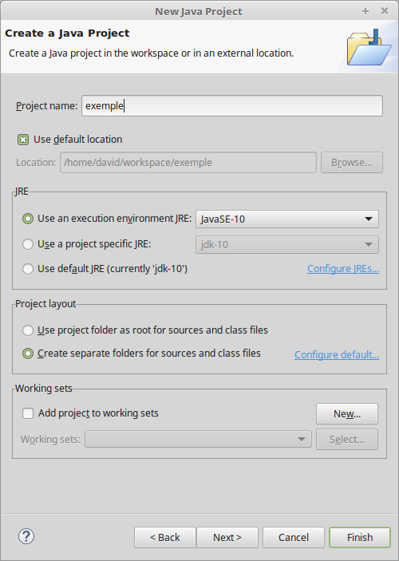

Compilation & exécution¶
Dans ce chapitre, nous n’allons pas directement nous intéresser au langage Java. Nous allons plutôt essayer de comprendre les mécanismes sous-jacents à la compilation et à l’exécution d’un programme Java. Nous verrons également comment créer un projet dans Eclipse.
Un premier programme¶
Nous allons utiliser comme exemple la programme Java suivant :
/**
* Ce programme n'est pas très intéressant
*/
public class PremierProgramme {
public static void main(String[] args) {
System.out.println("Hello World!");
}
}
La syntaxe du langage nous importe peu pour l’instant. Ce programme Java va simplement écrire le message « Hello World! » sur la sortie standard.
Téléchargez le fichier PremierProgramme.java
contenant ce code.
La compilation¶
Pour pouvoir exécuter ce programme, nous allons devoir le compiler. Pour cela, nous devons utiliser le programme javac (Java Compiler) dont c’est la fonction. Dans un terminal, il suffit de se rendre dans le répertoire où se situe le fichier et de lancer la commande de compilation :
$ cd /home/david/Workspace/workspace-java/exemple
$ javac PremierProgramme.java
Attention
Si votre système ne connaît pas la commande javac cela signifie simplement que le répertoire contenant ce programme n’est pas déclaré dans le chemin d’exécution du système. Il vous suffit de le rajouter ou de donner le chemin complet menant à ce programme. Par exemple :
$ /opt/bin/jdk1.8/bin/javac PremierProgramme.java
Le programme javac est installé dans le sous-répertoire bin du répertoire d’installation du JDK
La compilation devrait se passer sans problème et aboutir à la création du fichier PremierProgramme.class dans le même répertoire que le fichier java.
Note
Nous y reviendrons plus tard mais en Java, nous déclarons des classes (parfois un peu spéciales). Un fichier source porte l’extension java et contient le code source d’une classe. Un fichier résultant de la compilation porte le même nom que le fichier source mais avec l’extension class. Ce fichier n’est pas directement éditable car il contient des instructions en bytecode compréhensibles par la JVM.
L’exécution¶
L’exécution d’un programme se fait par l’intermédiaire de la machine virtuelle. Pour invoquer cette dernière, on utilise tout simplement la commande java suivie du nom de la classe sans l’extension :
$ java PremierProgramme
Attention
Si votre système ne connaît pas la commande java cela signifie simplement que le répertoire contenant ce programme n’est pas déclaré dans le chemin d’exécution du système. Il vous suffit de le rajouter ou de donner le chemin complet menant à ce programme. Par exemple :
$ /opt/bin/jdk1.8/bin/java PremierProgramme
Le programme java est installé dans le sous-répertoire bin du répertoire d’installation du JDK
La commande java va chercher le fichier PremierProgramme.class pour l’exécuter. Cela signifie qu’à ce stade, vous n’êtes pas obligé de disposer du fichier source PremierProgramme.java.
La liaison dynamique¶
Tous les langages de programmation évolués utilisent la notion de liaison (link). En effet, il est nécessaire à un moment donné de pouvoir créer un programme à partir de plusieurs fichiers source. Généralement, les fichiers source sont compilés un à un puis un mécanisme de liaison permet de gérer les dépendances entre chacun des fichiers. En programmation, on distingue la liaison statique et la liaison dynamique.
La liaison statique est une étape qui intervient après la compilation et qui permet de regrouper l’ensemble des fichiers compilés dans un fichier exécutable unique. Les langages tels que C et C++ supportent la liaison statique.
La liaison dynamique est une étape qui intervient au moment du lancement du programme. On vérifie que les fichiers compilés sont disponibles pour l’exécution.
Java ne supporte que la liaison dynamique. Cela signifie que chaque fichier compilé donnera un fichier class. Cela signifie également qu’un programme Java est en fait une collection de plusieurs fichiers class.
Si votre programme est dépendant d’une bibliothèque tierce en Java, vous devez également fournir les fichiers de cette bibliothèque au moment de l’exécution.
Note
Il est impossible d’écrire un programme Java qui n’est aucune dépendance avec d’autres fichiers class. Dans notre exemple, même simple, nous somme dépendant de la classe System. Nous sommes même dépendant de la classe Object alors que ce mot n’est pas présent dans le fichier source. Heureusement, ces classes font partie de la bibliothèque standard de Java qui est disponible avec l’environnement d’exécution. Nous n’avons donc pas à nous préoccuper de comment la JVM va trouver le code pour ces classes. Mais elle le fera bel et bien en utilisant le mécanisme de liaison dynamique.
Le classpath¶
La liaison dynamique implique qu’un programme Java est une collection de fichiers. Ces fichiers peuvent se trouver à différents endroits dans le système de fichiers. Il faut donc un mécanisme pour permettre de les localiser. En Java, on utilise le classpath : le chemin des classes. On peut par exemple spécifier un ou plusieurs chemins avec le paramètre -classpath aux commandes java et javac indiquant les répertoires à partir desquels il est possible de trouver des fichiers class.
$ java -classpath /home/david/Workspace/workspace-java/exemple PremierProgramme
La commande ci-dessus peut être exécutée à partir de n’importe quel répertoire puisqu’elle précise un classpath. La JVM tentera de chercher un fichier PremierProgramme.class dans le répertoire /home/david/Workspace/workspace-java/exemple.
S’il existe des répertoires contenant des fichiers class que vous utilisez souvent, vous pouvez les inclure implicitement dans le classpath on déclarant ces répertoires dans la variable d’environnement CLASSPATH.
$ export CLASSPATH=/home/david/Workspace/workspace-java/exemple
$ java PremierProgramme
Note
Même si le principe du classpath est simple, cela peut amener à des situations très complexes dans les projets. Si on indique plusieurs chemins, on peut avoir des répertoires utilisés comme classpath contenant des classes avec des nom identiques mais avec des comportements différents. On peut aussi exécuter à son insu du code malicieux. Depuis Java 9, un nouveau système baptisé Jigsaw et basé sur la notion de module a fait son apparition. Mais il faudra certainement plusieurs années avant que ce système ne remplace définitivement le mécanisme du classpath.
Bibliothèques Java : les fichiers JAR¶
Si on se rappelle qu’un programme Java est une collection de fichiers class et qu’il n’est pas rare qu’un programme ait besoin de centaines voire de milliers de ces fichiers alors on se rend vite compte qu’il n’est pas très facile de distribuer un programme Java sous cette forme.
Pour palier à ce problème, on peut utiliser des fichiers jar. JAR signifie Java ARchive : il s’agit d’un fichier zip contenant un ensemble de fichiers class mais qui a l’extension .jar. Java fournit l’utilitaire jar pour créer une archive :
$ jar -cf monappli.jar PremierProgramme.class
L’utilitaire jar reprend la syntaxe de tar sous les systèmes *NIX.
Un fichier JAR peut être ajouté au classpath rendant ainsi disponible l’ensemble des fichiers qu’il contient.
$ export CLASSPATH=/home/david/Workspace/workspace-java/exemple/monappli.jar
$ java PremierProgramme
C’est un moyen simple de distribuer son code. Toutes les bibliothèques tierces Java sont disponibles sous la forme d’un fichier JAR.
Création d’un projet dans Eclipse¶
Il est utile de comprendre le fonctionnement des outils tels que java ou javac mais ils ne sont pas d’une utilisation très aisée pour de vrais projets. On préférera utiliser un outil de build comme Ant, Maven ou Gradle pour automatiser la compilation et un environnement de développement intégré comme Eclipse pour le développement.
Eclipse fournit des avantages précieux pour les développeurs. Notamment :
- Eclipse compile automatiquement les fichiers lorsqu’ils sont sauvés. Il est donc possible d’avoir immédiatement un retour sur les éventuelles erreurs de syntaxe ou autres.
- Eclipse offre un environnement riche pour manipuler et modifier les fichiers sources.
Quelques raccourcis clavier utiles dans Eclipse :
| CTRL + espace | Complétion de code |
| CTRL + 1 (ou CTRL + SHIFT + 1) | Suggestions |
| SHIFT + ALT + R | Renommer dans tous les fichiers |
| MAJ + CTRL + F | Reformater le code |
| MAJ + CTRL + O | Organiser les imports |
| CTRL + SHIFT + T | Chercher le fichier d’une classe |
| CTRL + SHIFT + R | Chercher une ressource (un fichier) |
| F11 | Exécuter la classe courante |
On peut créer toutes sortes de projets différents dans Eclipse. Pour nous, le plus utile sera bien sûr le projet Java. Pour cela, il suffit d’aller dans le menu File > New > Java Project. On obtient alors la boite de dialogue suivante :
Il suffit de donner le nom du projet et de cliquer sur Finish. Il se peut qu’Eclipse ouvre ensuite une boîte de dialogue pour vous demander si vous voulez changer de perspective. Dans Eclipse, une perspective est un agencement de l’espace de travail adapté pour certaines tâches. Il existe par exemple une perspective Java adaptée pour développer du code Java et une perspective Debug pour le debuggage du code.
Un fois le projet créé, on voit que Eclipse a ajouté automatiquement un répertoire src
destiné à accueillir les sources du projet. Il suffit d’ajouter le fichier
PremierProgramme.java à cet endroit.
Comme indiqué ci-dessus, toute modification dans ce fichier entraînera automatiquement sa compilation au moment de la sauvegarde.
Si l’on souhaite distribuer son projet, on peut, par exemple, produire un fichier JAR. Pour cela, il suffit de faire un clic droit sur le nom du projet dans le Package Explorer et de choisir Export. Dans la boîte de dialogue d’export, il faut chercher « jar » et sélectionner Java > JAR File. En cliquant sur Next, on spécifie le nom et l’emplacement du fichier JAR et il sera créé en cliquant sur Finish.